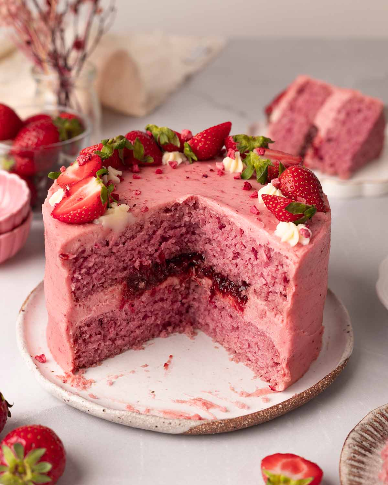

Cake recipes
Vanilla cake

Ingredients: 2½ cups flour 1 cup sugar 1 cup butter 4 eggs 1 tbsp vanilla extract 1 cup milk Steps: Cream butter and sugar. Add eggs one by one, then vanilla. Alternate flour and milk while mixing. Bake at 175°C (350°F) for 30 mins. Cool and decorate as desired.
Chocolate Cake

Ingredients: 1¾ cups flour ¾ cup cocoa powder 1½ tsp baking powder 2 eggs 1 cup milk ½ cup oil 1½ cups sugar Steps: Mix dry ingredients together. Add eggs, milk, oil. Mix until smooth. Bake at 175°C (350°F) for 30–35 mins. Frost with chocolate ganache or icing.
Strawberry Cake
Ingredients: 1½ cups flour 1 cup sugar ½ cup butter 2 eggs 1 tsp vanilla ½ cup milk 1 cup chopped strawberries Steps: Mix butter and sugar. Add eggs, vanilla, and milk. Stir in flour, then strawberries. Bake at 175°C (350°F) for 30 mins. Top with whipped cream or strawberry jam.
Caramel Cake

Ingredients: 2 cups flour 1½ cups sugar ½ cup butter 1 cup milk 2 eggs 1 tsp vanilla 1 cup caramel sauce Steps: Beat butter and sugar until creamy. Add eggs, vanilla, milk. Mix in flour gradually. Pour into pan and bake at 175°C (350°F) for 30–35 mins. Pour warm caramel sauce over cake.